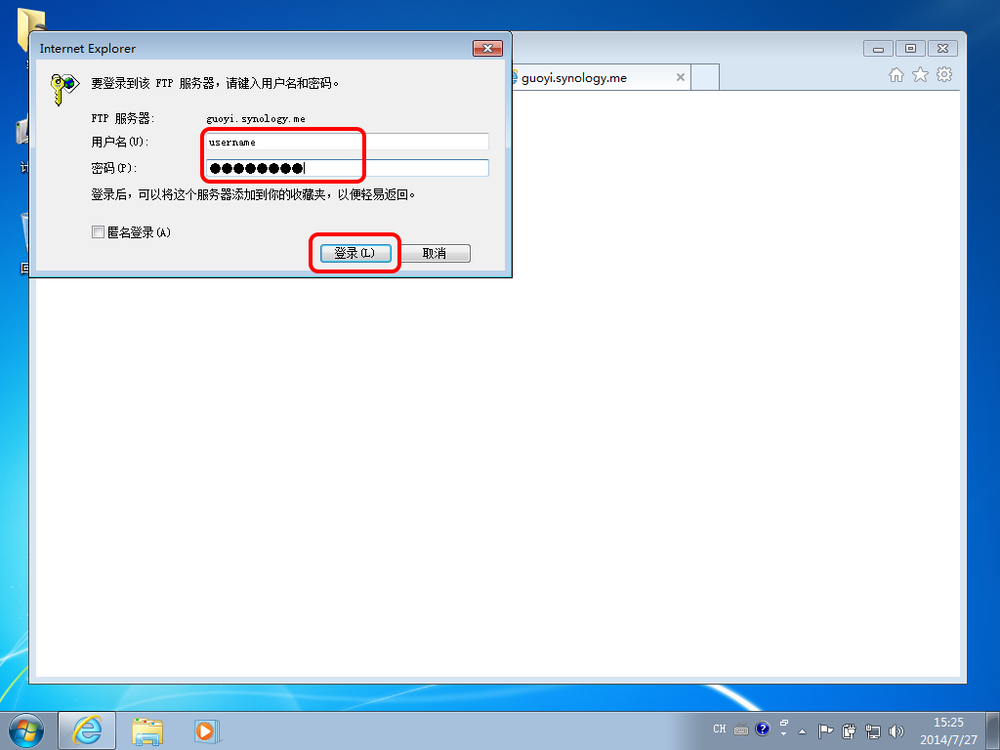
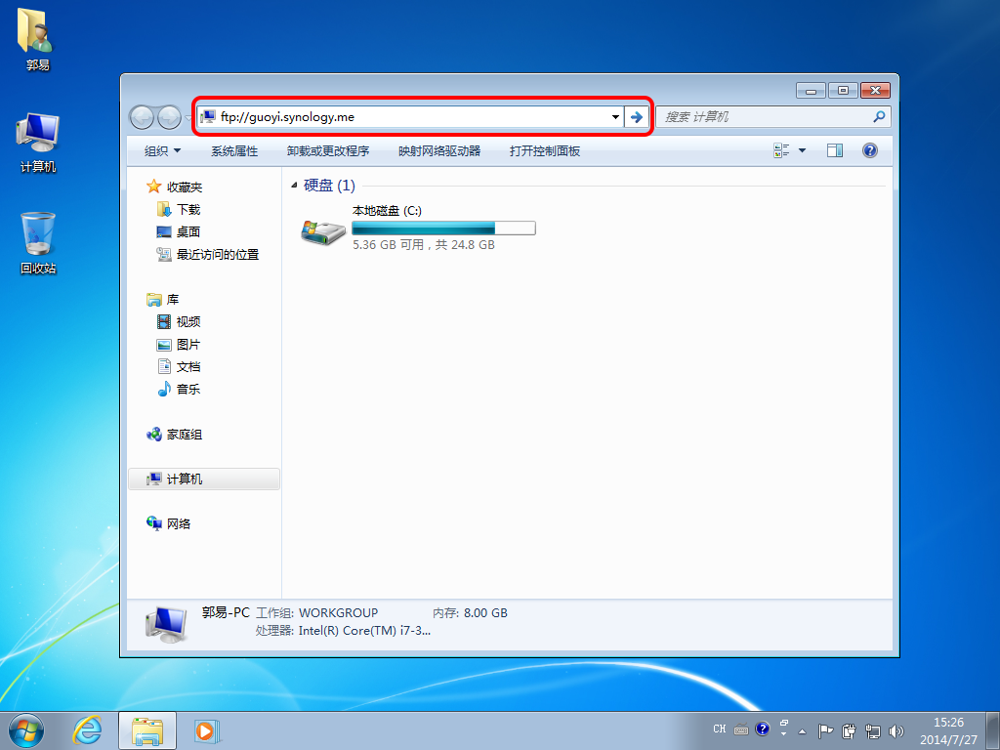
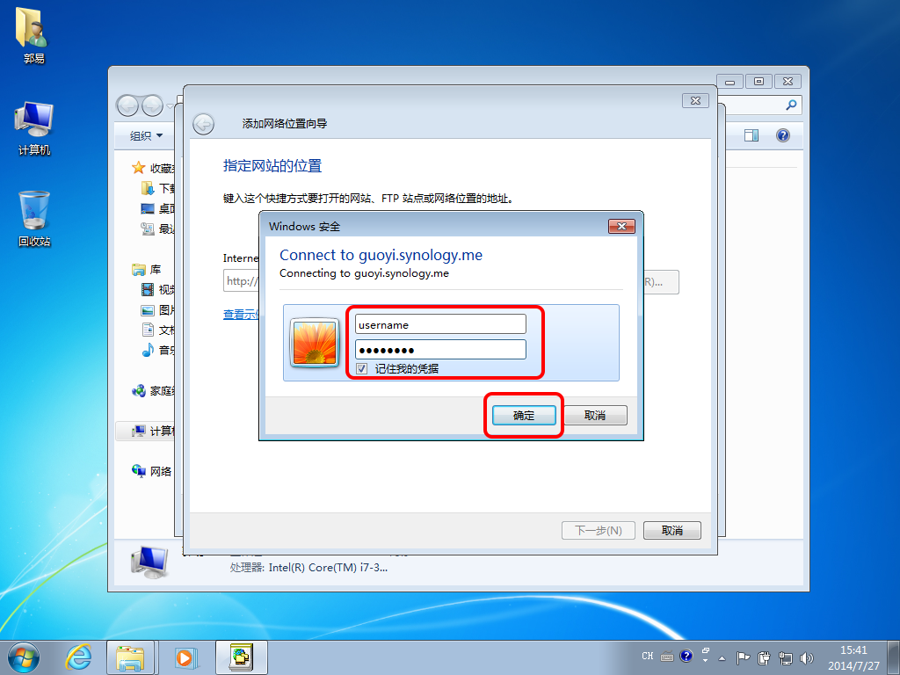

Synology
说明
访问存储服务器大致有三种方法：FTP、HTTP，和WebDAV。其中，
- FTP: 适合公共计算机临时访问。根据具体方法，FTP仅支持文件下载或文件的复制、粘贴、重命名、删除等基本文件操作。
- HTTP: 适合公共计算机临时访问，支持文件下载、上传、在线预览、重命名，及删除等文件操作。
- WebDAV: 适合个人计算机永久访问，在支持以上文件操作的基础上，还可以实现文件的直接预览和即时编辑。
FTP方法一：仅支持文件下载
- 左键单击本页右上角的FTP。
- 在弹出窗口输入您的用户名和密码，并敲击回车以登录。 
FTP方法二：支持复制、粘贴、重命名、删除等文件操作
- 在桌面环境下，左键双击计算机。
- 在地址栏输入服务器FTP链接地址。
- 在弹出窗口输入您的用户名和密码，并敲击回车登录。
ftp://guoyi.synology.me

注：如您在公共计算机登录，请勿选中保存密码。
- 左键单击本页右上角的HTTP， 或在任意浏览器地址栏输入服务器HTTP链接地址。
- 输入您的用户名和密码，并敲击回车以登录。
- 左键单击File Station。
http://guoyi.synology.me:5000
本方法将映射服务器至您的本地计算机。首次配置安装需重新启动计算机，请您保存当前文件，并关闭其他应用程序。
- 通过FTP或HTTP方法访问服务器公共 / WebDAV文件夹。（本节示例采用FTP方法二）
- 将install.bat和Webfldrs-KB907306-CHS.exe下载至桌面。
- 右键单击install.bat，并点击以管理员身份运行。
- 重新启动计算机
- 重新启动后，左键双击计算机。
- 点击映射网络驱动器。
- 点击连接到可用于存储文档和图片的网站。
- 点击下一步。
- 选中选择自定义网络位置，并点击下一步。
- 在Internet地址或网络地址栏输入服务器WebDAV链接地址，并点击下一步。
- 在弹出窗口中输入您的用户名和密码，勾选记住我的凭据，并点击确定。 
- 在请输入该网络位置的名称栏输入DiskStation并点击下一步。
- 点击完成。
- 关闭所有窗口，并重新打开计算机。
注：请确保install.bat和Webfldrs-KB907306-CHS.exe在同一目录下。
若出现如下图所示，则说明系统配置成功。按任意键退出即可。
http://guoyi.synology.me:5005

如下图所示，DiskStation即为远程服务器映射在您本地计算机上的快捷方式。双击DiskStation，您即可像操作本地磁盘一样进行文件的新建、编辑、删除等操作。